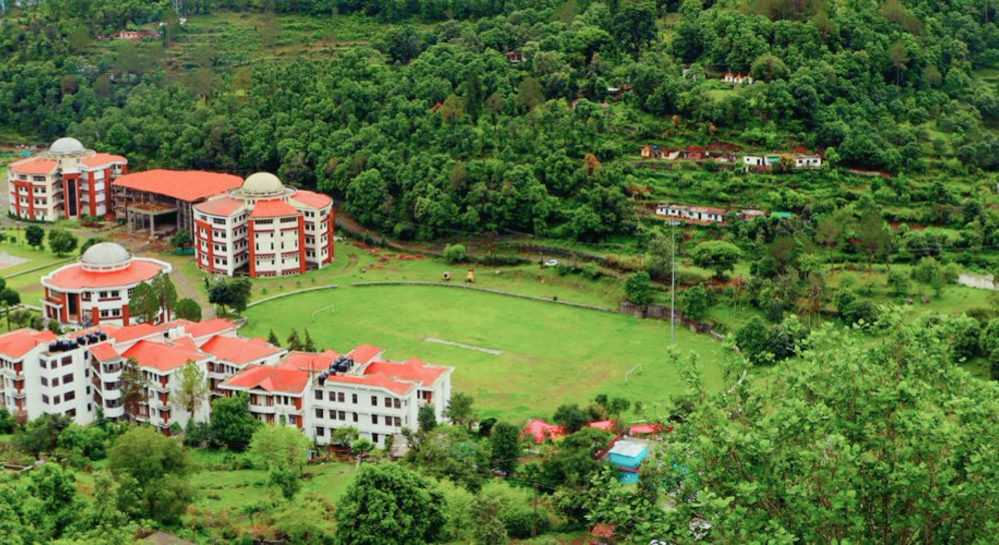

Call For Papers
The URSI-RCRS 2024 Scientific Program Committee cordially invites you to submit papers
for oral and poster presentations in the conference. Authors must electronically submit either an Extended
Abstract (minimum 250 words, maximum one page) or a Summary Paper (minimum two pages, maximum four pages) by
paper submission last date (link at first page). Papers are solicited in research areas that broadly cover the
Ten Scientific Commissions of URSI, as mentioned below:
Commission A: Electromagnetic Metrology
Commission B: Fields and Waves
Commission C: Radio-communication Systems and Signal Processing
Commission D: Electronics and Photonics
Commission E: Electromagnetic Environment and Interference
Commission F: Wave Propagation and Remote Sensing
Commission G: Ionospheric Radio and Propagation
Commission H: Waves in Plasmas
Commission J: Radio Astronomy
Commission K: Electromagnetics in Biology and Medicine
All the submitted papers will undergo a peer review process by experts on the subject and, if accepted, will be assigned to the appropriate session for presentations (oral/poster). One author registration will allow presentation of up to two papers in the conference. Papers presented at this URSI-RCRS 2024 will be submitted for posting to IEEE Xplore. In addition, there will be special programmes for URSI young scientists award (YSA) and a student paper competition (SPC) for graduate students.
Paper Submission Guidelines
Paper Preparation:
- The conference will have invited and contributory papers. The invited papers will be presented during oral sessions whereas all the contributory papers will be presented during oral sessions or interactive sessions using posters. Accepted papers presented at the conference will be submitted for inclusion in the conference proceedings as well as in IEEE Xplore.
- The Scientific Program Committee encourages the submission of original, unpublished, clear, accurate, and relevant papers in any of the topical areas covering broadly the ten commissions of URSI.
- All submitted papers will be peer-reviewed by the Scientific Program Committee and selected for either oral presentation or poster presentation.
- Authors will be asked to submit their papers, written in English, via the online submission system before the deadline …….. 2024 at (23:59 Indian Standard Time).
- For submission, the paper has to be prepared according to the requirements below. If the author is applying for the Young Scientist Award (YSA) or the Student Paper Competition (SPC) he/she would need to read those instructions as well. Additional documents will be needed.
- All submissions must be in the form of an IEEE Xplore-compatible PDF file. The format should be in accordance with three different paper standards for URSI-RCRS meetings, as given in the following templates. The templates below also describe the page limits and other requirements.
- Please note the acceptable formats for different categories of submission.
- Contributed and Invited Papers: The authors must submit either an Extended Abstract or a Summary Paper.
Award Category papers:
- Young Scientist Awards (YSA) : YSA applicants must submit a Summary Paper
- Student Paper Competition (SPC): SPC applicants must submit a Full Paper (a maximum of ten pages), which is used only for judging. The applicant must also submit either an Extended Abstract or a Summary Paper on the same topic
The templates for the submission are as follows:
For the paper submission to IEEE: In order to generate IEEE Xplore-compatible PDF files, all authors must use the IEEE PDF eXpress service. For URSI-RCRS 2024, the PDF eXpress details are found here: Paper Preparation.
Authors should please note that:
- All authors must agree to the copyright conditions available as part of the online submission process.
- Each author, who is registered for the conference can be the presenting author for a maximum of two papers.
- Extended Abstracts and Summary Papers will be included in the conference proceedings, with an ISBN number.
- Extended Abstracts and Summary Papers for those authors who execute the optional IEEE copyright agreement and which are presented at this URSI RCRS 2024 will be submitted for posting to IEEE Xplore.
- For the SPC applicants, Summary Paper or Extended Abstract should be submitted to the appropriate session. This means that the ten-page Full Paper will not be included in the Conference Proceedings (Full Papers will not be published to ensure that there are no subsequent prior-publication issues for those students who later wish to submit their work to a journal). The Summary Paper or Extended Abstract will be included in the conference proceedings.
Paper Submission:
All papers must be submitted On-line Paper Submission link given below this paragraph. Submissions by emails and other means will not be accepted. All invited/regular submission papers must be registered via the URSI-RCRS 2024 on-line paper submission system.
- If you are visiting for the first time, please register by creating your login ID and password. Please Login if you are a returning visitor. Your Login ID will be your Email address.
- Submit your paper in the form of an Extended Abstract or a Summary Paper, as applicable no later than last date.
- After your paper submission, you will receive the confirmation email from the URSI-RCRS 2024 Secretariat including your paper Title and the other specific information by e-mail. If you do not receive it within a week after your paper submission, please feel free to contact us at inrass.india@gmail.com
- If you are an YSA applicant, you will have to upload additional information, such as - your CV and Publications List
- If you are an SPC applicant, you will have to upload additional information, such as - your Full Paper, CV and Publications List and a Letter from your Supervisor on University letterhead
- There is a possibility that you may have had to discontinue midway through the paper submission process. For this, please log into the On-line submission link again. Your submission will be listed in the "Draft submissions". Please click continue and proceed to complete the submission
- If you like to submit more than one paper, please log in again to the On-line Paper Submission link. Click on "Start a New Submission". You will now be able to submit a new paper again. There is no limit to the number of submissions but please note that one conference registration will enable you to be a Presenting author for up to two papers only.